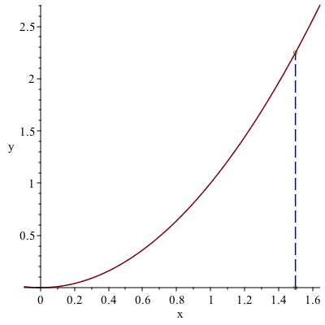

Introduction
-
Dylan
- I’m so tired of having to solve roots by hand. It’s a real drag.
-
Julia
- Yeah, some of these roots are rough. I wish there was a better way!
-
James
- There’s always a better way!
-
Dylan and Julia
- Show us!!!
-
James
- Maybe you’ve heard of Sir Isaac Newton? He got tired of solving roots
too, and made a whole method to approximate them!
-
Dylan
- Wow! I’m just like him except worse in every way!
Newton’s Method is a system of approximating roots of polynomials by using tangent
lines from an initial estimate. While this method is extremely accurate when
used properly, it is possible to have a very inaccurate estimate when used
improperly.
Guided Example
In the following figure we have an initial guess , then we have the blue tangent line
with respect to the point

What is the slope, in general, for the tangent line of at ?
What is the equation of the tangent line for the point ? Please answer in
slope-intercept form.
How would you use the tangent line you found above to estimate the value of
?
On Your Own
Consider the function .
Find the tangent line at an initial estimate of .
Plot the tangent line and function on the same axes. Does the x-intercept of the
tangent line seem more or less accurate than your initial estimate?
More Accurate Less Accurate
What is the x-intercept of the tangent line?
Continue this process until the x-intercepts change by less than .0001 on each
interval. How many intervals did this take?
Consider the function . Explain why the function has only one solution with the
help of a graph.
Using from the previous problem, use an initial guess of 2. After 5 iterations, what
result do you get?
Why is it important to use caution with Newton’s method?
In Summary
-
Julia
- Wow! Newton’s Method is awesome!
-
Dylan
- Yeah, it’s way more accurate than just guessing! If you’re too far off on
that initial guess though...
-
James
- Things can go downhill quickly. While Newton’s Method can be handy,
it’s important to remember how important an accurate initial estimate is!
-
Dylan and Julia
- Thanks James!